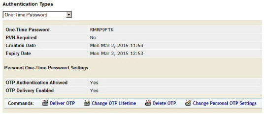
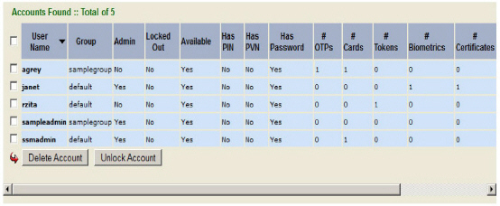
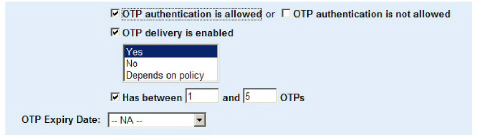
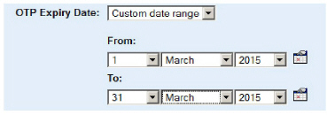

|
IdentityGuard Server 13.0 Administration Guide |
|
IdentityGuard Server 13.0 Administration Guide |
Topics in this section:
● To find a user’s one-time password
● To find multiple users with one-time password authentication allowed
● To find users based on their ability to use one-time passwords
To find a user’s one-time password
1. Log in to the Entrust IdentityGuard Administration interface as the administrator.
 On the
Windows computer where Entrust IdentityGuard is installed
On the
Windows computer where Entrust IdentityGuard is installed
2. Click User Accounts on the main menu.
3. To find a specific user, use the Go To Account tab (see Search for information about a specific user)
4. On the View Account pane for the user, under Authentication Types, click One-time Password and review the OTP details.

If the OTP has expired, the expiry date appears in red.
Note: If the administrator logged in does not have the permissions needed to see the user’s OTPs, the number of OTPs is displayed instead.
To find multiple users with one-time password authentication allowed
1. Click User Accounts on the main menu.
2. From the User Accounts page, click the Find Accounts tab.
The Search Options page appears.
3. Click Has the additional account characteristics below.
The Additional account characteristics pane appears.
4. Click OTP Authentication is allowed.
5. Click Find Accounts at the bottom of the page.
The Search Results page appears, listing users allowed to use OTP authentication. Note that users may have OTP authentication allowed, but not have an OTP assigned. (See the Has OTP column.)

6. For further details about the one-time password, click the user name.
The Account Information pane appears.
7. Under to Authentication Types, click One-time Password and review the OTP details.
To find users based on their ability to use one-time passwords
8. Log in to the Entrust IdentityGuard Administration interface as the administrator.
On the
Windows computer where Entrust IdentityGuard is installed
2. Click User Accounts on the main menu.
3. From the User Accounts page, click the Find Accounts tab.
The Search Options page appears.
4. Click Has the additional account characteristics below.
The Additional Account Characteristics pane appears.
5. Use the OTP search options to do one of the following:

● To find users allowed to authenticate with a one-time password, select OTP authentication is allowed. This finds users who have the OTP Authentication Allowed setting on their account page set to Yes.
● To find users not allowed to authenticate with a one-time password, select OTP authentication is not allowed. This finds users who have the OTP Authentication Allowed setting on their account page set to No.
● To find users whose OTP can or cannot be delivered using the Entrust out-of band delivery mechanism, select OTP delivery is enabled.
More options appear. You can select one or more of the following:
– To find users who can receive a one-time password, select Yes.
– To find users who cannot receive a one-time password, select No.
– To find users whose ability to receive a one-time password is governed by group policy, select Depends on policy.
● To find users with a number of OTPs in a range you specify, enter the lower minimum and maximum number of OTPs to look for.
● To search on the OTP expiry date, select from the drop-down menu. You can search for users whose OTPs are expiring in various time frames:
If you select Custom date range, the date range specification options appear:

6. Select other search options as applicable (see Searching for user information for details).
7. Click Find Accounts.
The Search Results page appears.
8. Click a user name.
The Account Information pane appears.
9. Under Authentication Types, click One-time Password, and review the OTP details.